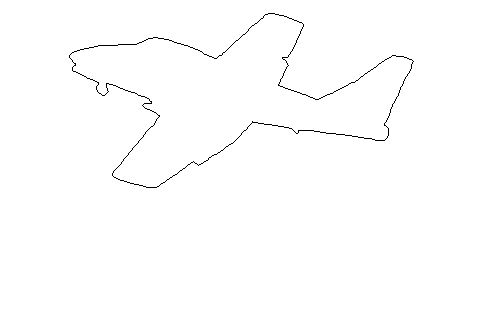

Atenção: Esta tarefa não será corrigida manualmente, mas você deve tentar respondê-la genuinamente. Se tiver alguma dúvida se ela está ou não correta, procure os monitores. Tentativas de passar no teste automático sem responder as questões serão consideradas fraude.
Imagens monocromáticas
Representação
Imagens monocromáticas são imagens de apenas duas cores, normalmente preto e branco. Tais imagens podem ser representadas por uma matriz de bits de modo que um bit 0 representa a cor branca e um bit 1 representa a cor preta. Cada bit corresponde a um pixel da imagem.
No formato PBM, uma imagem pode ser escrita como um arquivo de texto da seguinte forma: a primeira linha indica o tipo do arquivo, P1 nesse caso; a segunda linha indica as dimensões da imagem, largura e altura respectivamente; cada linha seguinte representa uma linha imagem escrevendo 0 para o pixels brancos e 1 para o pixels pretos. Para um exemplo, a matriz de bits abaixo representa a imagem seguinte. Observe que para facilitar a visualização, a imagem foi aumentada.
0 0 0 0 1 0 0 0 0 0 1 0 0 0 0 0 1 0 0 0 0 0 1 0 0 0 0 0 1 0 0 0 0 0 1 0 1 0 0 0 1 0 0 1 1 1 0 0 0 0 0 0 0 0 0 0 0 0 0 0
Enquanto essa representação em matriz é conveniente, ela utiliza muita memória, especialmente em imagem de alta resolução, com vários milhoẽs de pixels (megapixels). Assim, para reduzir a quantidade de memória necessária para armazenar imagens que sejam representadas dessa forma, normalmente, utilizamos alguma outra representação mais compacta. Por exemplo, podemos codificar uma sequência de elementos utilizando a codificação run-length.
Com essa codificação, representamos cada sequência de elementos iguais como o tamanho da sequência seguido do valor do bit. Por exemplo, a sequência de bits ZZUZZUUUZZUUUUUU poderia ser representada como 2Z1U2Z3U2Z6U. Essa codificação também é uma compressão sem perda e é utilizada em diferentes formatos de arquivos.
Nessa tarefa, vamos alterar um pouco a codificação de run-length. Como a imagem é representada por uma matriz, vamos fazer a codificação utilizando duas linhas, assim, temos quatro possíveis padrões: 00, 01, 10 e 11. O primeiro bit é da primeira linha e o segundo bit da segunda. Então, para armazenar uma imagem binária nesse formato, começamos definindo a largura e altura da imagem separadas por um espaço e na próxima linha, escrevemos a sequência que define a imagem como o número de vezes o padrão se repete seguido do padrão. Por exemplo, a matriz
00000000 11110000 11111111 11111111 11111111 11111111
deve ser codificada do seguinte modo:
P1C 8 6 4 01 4 00 16 11
onde P1C indica o tipo do arquivo e 8 6 é a informação de largura e altura.
Repare que a altura é sempre um número par.
Você deve terminar de implentar o módulo chamado modulo.py que codifica e decodifica imagens binárias utilizando a codificação run-length. Esse módulo deve ler imagens no disco no formato PBM e escrever no disco no formato compactado descrito acima, ou vice-e-versa.
As funções que precisam ser implementadas são:
- função para codificar imagem com nome
codificar; - função para decodificar imagem com nome
decodificar; - função de leitura de arquivo compactado com nome
carregar_imagem_codificada; - função de escrita de arquivo compactado
escrever_imagem_codificada; - função de leitura de arquivo pbm descompactado com nome
carregar_imagem_decodificada; - função de escrita de arquivo pbm descompactado
escrever_imagem_decodificada.
Um módulo com as assinaturas dessas funções está disponível na pasta da tarefa. Você pode construir sua solução alterando esse módulo.
Bordas
Em processamento de imagens, uma tarefa bastante importante é detectar as bordas dos objetos em uma imagem. A borda de um objeto é formada pelos pixels que tem ao menos um vizinho que não está no objeto.
A seguir, podemos ver um exemplo de imagem binária e a sua imagem de bordas.

Você deve implementar um programa em Python que dada uma imagem binária produz uma imagem de bordas e a escreve no formato PBM. Um esboço desse programa já está disponível na pasta da tarefa com nome bordas.py.
Entrada
Uma imagem binária codificada com nossa versão do código de run-lenth.
Saída
A imagem binária das bordas da imagem codificada com nossa versão do código de run-lenth.
Dicas
-
Pode ser útil olhar para a imagem em um visualizador. Em distribuições GNU/Linux, a maioria dos visualizadores pode abrir arquivos PBM facilmente. Em outros sistemas operacionais, você talvez precise instalar um visualizador ou editor de imagens, ou pode usar uma ferramenta de conversão online, como essa. Se seu visualizador não funcionar, você tentar fazer download desse.
-
Você não deve modificar a função
maindo arquivobordas.pyfornecido. Ela é utilizada pelo script de teste automático. Essa função só faz uma tarefa: ler uma imagem compactada de um arquivo (e.g.,testes/cross.in) e escrever uma imagem compactada em outro arquivo (testes/cross.out). O scripttestar.pyirá verificar se esse arquivo de saída bate com o gabarito (testes/cross.res).No entanto, as funções que você vai implementar podem ser utilizadas de diversas maneiras! Para testar apropriadamente, você deverá criar seus próprios testes. Por exemplo, para testar a leitura de arquivo PBM, fornecemos um arquivo programa Python
testar_leitura_pbm.pyfrom modulo import carregar_imagem_decodificada def testar_leitura_pbm(): largura, altura, imagem = carregar_imagem_decodificada("testes/jota.pbm") assert largura == 6 assert altura == 10 matriz_esperada = [ ['0', '0', '0', '0', '1', '0'], ['0', '0', '0', '0', '1', '0'], ['0', '0', '0', '0', '1', '0'], ['0', '0', '0', '0', '1', '0'], ['0', '0', '0', '0', '1', '0'], ['0', '0', '0', '0', '1', '0'], ['1', '0', '0', '0', '1', '0'], ['0', '1', '1', '1', '0', '0'], ['0', '0', '0', '0', '0', '0'], ['0', '0', '0', '0', '0', '0'], ] assert imagem == matriz_esperada testar_leitura_pbm()
O que esse programa faz é verificar se a imagem que a função implementada devolve é de fato a matriz de bits que fornecemos manualmente. Quando você executar esse programa, se você vir uma mensagem de erro, então sua função tem um problema; mas se nada aconteceu, então o teste passou.
Para testar a sua função de detecção de bordas, você pode criar um arquivo um arquivo
testar_bordas.pyparecido com o seguintefrom bordas import destacar_bordas def testar_bordas(): # crie um exemplo de imagem pequena para testar largura = ... altura = ... imagem = [ ... ] # cria a matriz de bordas que você espera para essa imagem bordas_esperadas = [ ... ] # aqui chamamos a função sendo testada bordas_calculadas = destacar_bordas(largura, altura, imagem) # isso irá gerar um erro quando a função não estiver correta assert bordas_esperadas == bordas_calculadas # se o programa não falhou, então talvez sua função esteja correta testar_bordas()